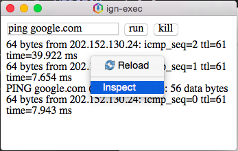

IGN SDK included in IGOS Nusantara D9.1 as default package. If it's not installed in your system, see the following step to start the installation:
$ sudo yum install ignsdk
ignsdk-devtools. This package is contain tools for creating and packaging IGN SDK Application. Try this command to install ignsdk-devtools: $ sudo yum install ignsdk-devtools
ignsdk -p /usr/share/ign-sdk/test/calculator.ign
IGN SDK Developer Tools will help you to create an IGN SDK application. In other way, this script could packaging your application into .deb (Debian, Ubuntu, LinuxMint, etc) and .rpm (IGOS Nusantara, openSUSE) package. Before further reading, make sure that IGN SDK Developer Tools have installed in your Linux Machine that supported by IGN SDK.
ignsdk-app-creator -p [packet_name] command in your terminal. [packet_name] is filled with your application name. The character must be in lower case, alphanumeric or dash ( - ) character. Make a sure that your application name is not duplicate with other application installed at repository (ex: gimp, apache, mysql, dsb.). For the example, you could give a name aplikasi-keren for your application.$ ignsdk-app-creator -p aplikasi-keren
Application name: Aplikasi Keren
Choose one: 2
Version [1.0]: 1.0
Release [1]: ign9
License [MIT/BSD/GPL2/GPL3/etc, default=MIT]: MIT
URL [example.com]: ignsdk.web.id
Description: Aplikasi keren untuk memutar musik
$ ignsdk -p ~/IGNSDK-APP/aplikasi-keren.ign
In development phase, debugging process has an important roles for helping a developer to know what a process has been executed or emitted error by our application. In IGN SDK, you could choose two mode for debugging your application. You could choose local debugging or remote debugging.
By default, IGN SDK local debugging could be activated by this method:
$ ignsdk -d -p ~/IGNSDK-APP/aplikasi-keren.ign
debug object with true value within ignsdk.json file{
"config" : {
"debug" : true,
"websecurity" : true,
"name" : "Aplikasi Keren"
}
}

Remote debugging will facilitated developer to enter IGN SDK debug mode with browser or other device. To activated remote debugging, you just add a parameter -r <port> while execute IGN SDK application
$ ignsdk -d -r 8080 ~/IGNSDK-APP/aplikasi-keren.ign
Then access the debugging mode at your browser with this URL http://ip-target:port. For the example you could try http://127.0.0.1:8080 to access your application debugging mode.
IGN SDK-based application could distribute to user in many ways. The easiest way to distribute your application is create .deb or .rpm package for your application. The script that will be used for packaging the application is ignsdk-app-builder.
$ ignsdk-app-builder -p aplikasi-keren
aplikasikeren.ign-1.0-ign9.noarch.rpm. You could find the package at /home/igos/rpmbuild/RPMS/noarch/. And now try to install that package with this command:$ sudo yum install ~/rpmbuild/RPMS/noarch/aplikasi-keren.ign-1.0-ign9.noarch.rpm
Javascript :
/*Import Sys Module from IGNSDK runtime*/
var sys = ign.sys();
$(document).ready(function(){
$('#exec').click(function(){
/*Get the command field
dari text input id (#) "cmd"*/
var cmd = $('#cmd').val();
/*Command are sent to IGN SDK runtime
IGNSDK untuk di eksekusi*/
sys.exec(cmd);
sys.out.connect(function(out){
/*stdout result from runtime is display to id element*/
$('#out').prepend(out+"<br>");
})
});
$('#kill').click(function(){
/*Stopping the process*/
sys.kill();
});
});
HTML :
<body>
<input type="text" value="ping google.com" id="cmd">
<input type="submit" value="exec" id="exec">
<input type="submit" value="kill" id="kill"><br>
<div id="out"></div>
</body>
Javascript :
//Import required module from IGN SDK runtime
var fs = ign.filesystem();
var sql = ign.sql();
//database file name
var dbFile = "coba.db";
$(document).ready(function(){
//reference http://goo.gl/E0obMa
//check if in database is exists
if(fs.info(dbFile).exists){
// if database exists, application will execute load() function
sql.driver("sqlite", dbFile);
load();
}
else{
//Execute the setupDB() if database is not exists
setupDb();
}
});
function setupDb(){
//connect to database
sql.driver("sqlite", dbFile);
//create user table wit id, nama, and umur field
sql.query("create table user(id INTEGER PRIMARY KEY AUTOINCREMENT,nama varchar(10), umur smallint)");
}
function add(){
var nama = $("#nama").val();
var umur = $("#umur").val();
//query for inserting data into database
var add = sql.query("insert into user (nama,umur) values ('"+nama+"',"+umur+")");
alert("input berhasil status "+add.status);
}
function load(){
//query for fetching data
var loadData = sql.query("select * from user");
var html="";
loadData.content.forEach(function(data){
html += "Nama : " + data.nama + "<br>";
html += "Umur : " + data.umur + "<br>";
html += "<a href='#' onclick='del("+data.id+")'>Delete</a><hr>";
});
$("#out").html(html);
}
function del(id){
//query for deleting data
var del = sql.query("delete from user where id="+id);
}
HTML :
<input type="text" placeholder="Nama" id="nama"><br>
<input type="text" placeholder="Umur" id="umur"><br>
<input type="submit" value="Tambah Data" onclick="add()">
<div id="out"></div>